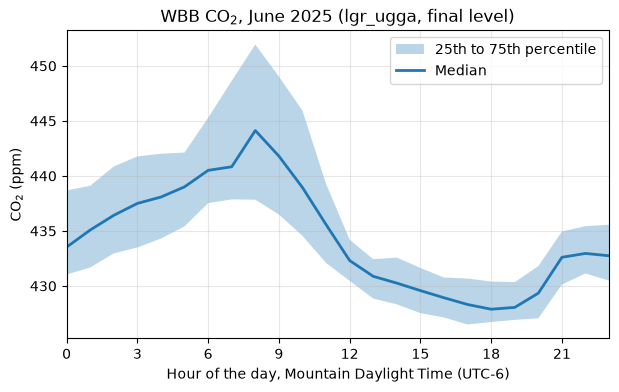

Your first month of data#
Note
The examples on this page read the UATAQ archive, which is only available on CHPC. They are shown as code and are not run when the documentation is built. The output under each one, and the figure, are from runs on CHPC on 12 October 2026. If the data are reprocessed, the numbers can change a little.
This page takes you from an installed uataq (see Installation) to a month of CO2 from one site, in local time, and a plot of its daily cycle. On the way it shows where the numbers came from: which instrument, which data level and which research group. The example is CO2 at WBB (William Browning, on the University of Utah campus) for June 2025, in Mountain time.
To pick a different site, pollutant or month, first check that there are data: What data exists shows how, and When there is nothing to read says what the errors mean when there are none.
Read a month#
get_obs() takes a site, a pollutant and a time range:
>>> import uataq
>>> obs = uataq.get_obs("WBB", "CO2", time_range="2025-06")
>>> obs
CO2d_ppm_cal CO2d_ppm_raw
Time_UTC
2025-06-01 00:00:03 432.407511 435.5981
2025-06-01 00:00:13 432.561390 435.7535
2025-06-01 00:00:23 433.129237 436.3271
2025-06-01 00:00:33 433.462976 436.6642
2025-06-01 00:00:43 433.639127 436.8421
... ... ...
2025-06-30 23:59:13 427.961767 429.8449
2025-06-30 23:59:23 427.877508 429.7600
2025-06-30 23:59:33 427.763867 429.6455
2025-06-30 23:59:42 427.754553 429.6361
2025-06-30 23:59:52 427.856023 429.7383
[250687 rows x 2 columns]
It takes a few seconds. You get one table (a pandas DataFrame) with a row
about every 10 seconds. CO2d_ppm_cal is the calibrated CO2 dry mole fraction
in ppm, and CO2d_ppm_raw is the same measurement before calibration. The
column names are explained under Column names on the Columns and flags page.
This month is in UTC, not in local time. The next sections say where the numbers came from, and then how to get a month in local time.
Where the numbers came from#
When you use these data, write down the instrument, the data level and the research group they came from, and the uataq version you used. The table does not show them, so here is how to find each one.
The instrument#
get_obs() reads every instrument at the site that measures the pollutant.
To see which ones those are:
>>> wbb = uataq.get_site("WBB")
>>> [instrument.name for instrument in wbb.pollutant_instruments["CO2"]]
['lgr_ugga']
>>> print(wbb.instruments["lgr_ugga"].active_range)
After 2013-10-09 00:00:00
So WBB’s CO2 comes from one instrument, the lgr_ugga (a Los Gatos Research
greenhouse gas analyzer, which also measures CH4), installed in October 2013. A
site can have more than one instrument for a pollutant, one after another or at
the same time. get_network_obs() returns the data with an
instrument column on each row, when you need to tell them apart (see
Several sites at once).
The data level#
The archive keeps each instrument’s data at several processing levels (raw,
qaqc, calibrated and final; see Processing Level and the
pipeline’s
description of the levels).
The final level is the ready-to-share level (it can go to people outside
the group as it is), with the pipeline’s default flags applied: flagged rows are
dropped, and for the CO2 and CH4 analyzers so are the rows that measured
calibration tanks. The lower levels keep those rows, for finer control. Which
one to use depends on how clean the data need to be for what you are doing, and
on how much control you want over the QAQC.
get_obs() always reads the final level, so the month above is final
data. It has no lvl argument. To read another level, use read_data(),
which reads one or more instruments by name. With no lvl it reads the
highest level the instrument has, which for the lgr_ugga is final:
>>> data = uataq.read_data("WBB", "lgr_ugga", time_range="2025-06-02")
>>> data["lgr_ugga"].columns.tolist()
['CO2d_ppm_cal', 'CO2d_ppm_raw', 'CH4d_ppm_cal', 'CH4d_ppm_raw', 'H2O_ppm']
>>> len(data["lgr_ugga"])
8390
The qaqc level of the same day has every row the analyzer logged, with the
columns that say what each row is:
>>> qaqc = uataq.read_data("WBB", "lgr_ugga", lvl="qaqc", time_range="2025-06-02")["lgr_ugga"]
>>> len(qaqc)
8845
>>> qaqc["QAQC_Flag"].value_counts()
QAQC_Flag
0 8586
-2 259
Name: count, dtype: int64
The 8,845 rows are the 8,390 final ones, 259 rows flagged -2 and 196 rows
that measured calibration tanks. QAQC_Flag is the pipeline’s flag: 0 is good
and a negative number says why a row was flagged. The pipeline’s
QAQC flag page
lists what each number means. ID_CO2 marks what the analyzer was sampling:
-10 is the outside air. Columns and flags explains these columns.
The research group#
Each instrument’s data come from one research group’s archive. WBB’s
lgr_ugga is run by the lin group, the default (see Research Group).
Error messages name the group that was searched, as in
lgr_ugga in lin groupspace.
The version#
>>> uataq.__version__
'2026.10.1.dev6+g2f5e83eb5'
Yours will differ. For results you will publish, install a fixed release (see Installation).
Times are UTC#
Every time in uataq is UTC: the times in the data, and the times you pass
in time_range (every form it takes is under Time Range). The
index is named Time_UTC to say so, but the time zone is not attached to it
(pandas calls this a naive time):
>>> obs.index.name, obs.index.tz
('Time_UTC', None)
Salt Lake City is 6 hours behind UTC in summer (Mountain Daylight Time, MDT) and
7 hours behind in winter (Mountain Standard Time, MST). Do not subtract a fixed
number of hours. Tell pandas the times are UTC, then convert them to the
America/Denver time zone, which knows when the clocks change:
>>> local = obs.tz_localize("UTC").tz_convert("America/Denver")
>>> local.head(3)
CO2d_ppm_cal CO2d_ppm_raw
Time_UTC
2025-05-31 18:00:03-06:00 432.407511 435.5981
2025-05-31 18:00:13-06:00 432.561390 435.7535
2025-05-31 18:00:23-06:00 433.129237 436.3271
The same measurements, now labeled in local time; -06:00 is the offset from
UTC. (The index keeps the name Time_UTC. Rename it if that confuses you:
local.index.name = "Time_local".)
A month in local time#
time_range="2025-06" is June in UTC. In local time that is from 18:00 on
31 May to 18:00 on 30 June:
>>> local.index[0], local.index[-1]
(Timestamp('2025-05-31 18:00:03-0600', tz='America/Denver'), Timestamp('2025-06-30 17:59:52-0600', tz='America/Denver'))
So “June” read this way has six hours of 31 May (2,083 rows) and is missing the last six hours of 30 June (2,081 rows), with no warning. A daily mean or a daily cycle for the first and last day comes out wrong.
To get June in local time, read one more day in UTC, convert, and then cut the local month:
>>> obs = uataq.get_obs("WBB", "CO2", time_range=["2025-06-01", "2025-07-01"])
>>> obs = obs.tz_localize("UTC").tz_convert("America/Denver")
>>> june = obs.loc["2025-06"]
>>> june.index[0], june.index[-1]
(Timestamp('2025-06-01 00:00:03-0600', tz='America/Denver'), Timestamp('2025-06-30 23:59:52-0600', tz='America/Denver'))
>>> len(june)
250685
The read runs to the end of 1 July in UTC (a string end includes the whole day
it names; see Time Range), which covers the end of June in Mountain
time. After the conversion, obs.loc["2025-06"] picks the rows in June local
time, because the index now has a time zone. 30 June now has all of its 8,324
rows. Any month works the same way: start the read on the first day of the
month and end it on the first day of the next.
The daily cycle#
With the month in local time, group the rows by the hour of the local day. This
script reads June, as above, and plots the median CO2 for each hour, with the
middle half of the values shaded. Save it as daily_cycle.py:
import matplotlib.pyplot as plt
import uataq
# June 2025 in Mountain time: read one extra UTC day, convert, then cut
obs = uataq.get_obs("WBB", "CO2", time_range=["2025-06-01", "2025-07-01"])
obs = obs.tz_localize("UTC").tz_convert("America/Denver")
june = obs.loc["2025-06"]
# The 25th, 50th and 75th percentiles for each hour of the local day
co2 = june["CO2d_ppm_cal"]
by_hour = co2.groupby(co2.index.hour).quantile([0.25, 0.5, 0.75]).unstack()
print(by_hour.round(1))
fig, ax = plt.subplots(figsize=(7, 4))
ax.fill_between(
by_hour.index, by_hour[0.25], by_hour[0.75], alpha=0.3, label="25th to 75th percentile"
)
ax.plot(by_hour.index, by_hour[0.5], linewidth=2, label="Median")
ax.set_xticks(range(0, 24, 3))
ax.set_xlim(0, 23)
ax.set_xlabel("Hour of the day, Mountain Daylight Time (UTC-6)")
ax.set_ylabel("CO$_2$ (ppm)")
ax.set_title("WBB CO$_2$, June 2025 (lgr_ugga, final level)")
ax.grid(alpha=0.3)
ax.legend()
fig.savefig("wbb_co2_daily_cycle.png", dpi=100, bbox_inches="tight")
It needs matplotlib (pip install matplotlib). Hour 8 is the hour from 08:00
to 08:59 local time. The script took 8 seconds and 0.2 GB of memory, which is
fine on a login node. For more data (a year, several sites), run it in a job
(see Use uataq in a Slurm job). This one was run in a Slurm job, and drew:

CO2 at WBB in June 2025 by hour of the local day: the median (line) and the 25th to 75th percentiles (shading), from the run above.#
CO2 is highest around 08:00 local time and lowest around 18:00. Read in UTC, the same peak would show at hour 14, and the plot would be six hours off.
Next#
Sites and instruments: every site and instrument, what each measures, and what the names mean.
What data exists: when the sites have data, and what is the newest.
Reading data: the site and instrument objects, the
longformat, several sites at once, and the mobile (TRAX and bus) sites.When there is nothing to read: what the errors mean when a read finds nothing, and what to do.
Columns and flags: what each column of each level holds, the column names, the
IDcolumns, and the flags.Input Parameters: what each argument of
read_data()andget_obs()means, and every form oftime_range.